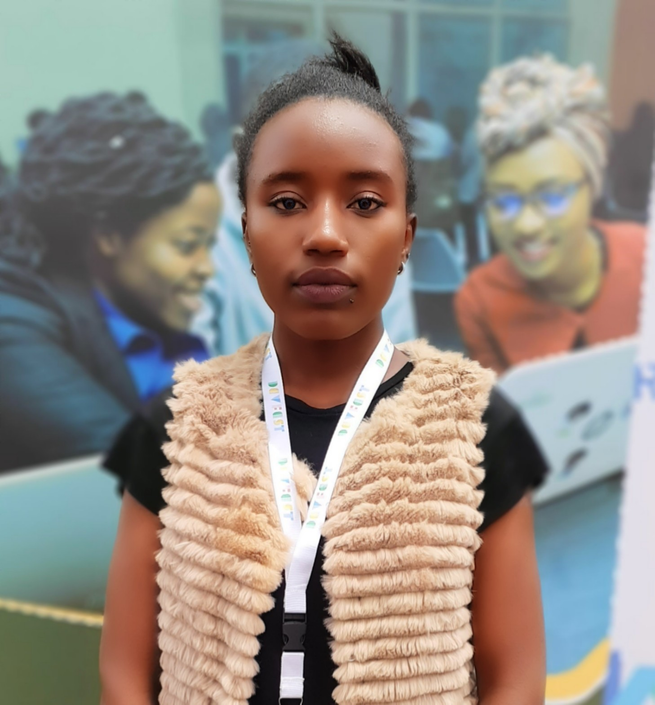

Mburia Betty

It's live link on Github pages TayLaugh House
About me.
I am a good person. Ready to learn, optimistic, devoted and amazing. I have a passion for cybersecurity and ethical hacking.
Background.
- Currently at Moringa School studying software development.
- Industrial attatchment at Southern Star headquarters - Chuka.
- 3 years Bsc Information Technology at Kaimosi Friends University College.
Current Hobbies,
- Coding
- Reading technical blogs
- Watching fashion and modelling shows.
- Hanging out with my laptop
Skills.
- HTML5, CSS3, Javascript
- Github and git.
- Softskills like; confidence, giving feedback and recieving feedback, integrity.